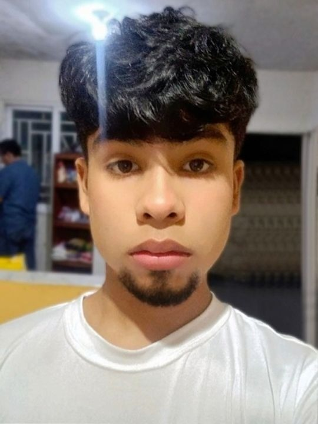

Daniel Cosme | WDD 130

Hello! My name is Daniel Cosme, and I'm from San Francisco, Zulia, Venezuela. I work professionally in graphic design and video editing, and I'm currently expanding my skills into web development. I'm passionate about creating visual solutions that are both functional and aesthetically striking.